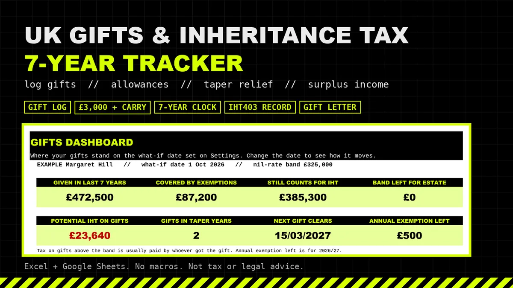
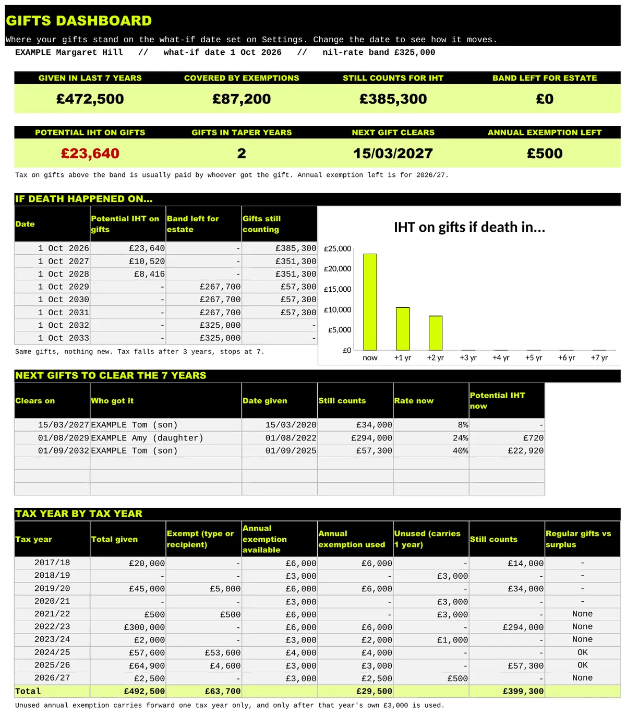

IHT
UK Gifts and Inheritance Tax 7 Year Tracker
When someone dies, their executor has to list every gift they made in the previous 7 years on form IHT403. Most families piece it together from old bank statements. This workbook keeps the record as you go and shows where you stand.

Who it's for
- People making gifts who want a record ready for their executors.
- Anyone giving regular gifts from income who needs to back them up.
What's included
- Gift Log: one row per gift. Takes off the exemptions that apply (spouse or civil partner, charity, £250 small gifts, wedding gifts, regular gifts from income), then uses the £3,000 annual exemption in date order, including last year's unused amount.
- 7 year clock: pick a date and see which gifts are still inside 7 years, how much of the £325,000 nil rate band they use, the taper rate and the tax on each gift.
- Dashboard: what still counts, band left for your estate, the next gifts to clear 7 years and a tax year summary.
- Surplus Income: the income and spending table from page 8 of IHT403, one column per tax year.
- Gift Letter: a plain statement of intent for regular gifts that you can adapt, sign and keep.
- Rates & Sources: every rule linked to GOV.UK or HMRC's manual. Reproduces GOV.UK's own examples.
An .xlsx file that works in Excel, Google Sheets and LibreOffice. No macros.
What it isn't
- Working out the tax on a whole estate, the residence nil rate band, trusts, or business or farm relief.
- Gifts you still benefit from. It flags those but does not work them out.
- Pensions counting towards estates from April 2027. That is not modelled.
Preview

Free calculator
Want a quick figure first? No sign up.
Gift Inheritance Tax taper checkerFor anyone who has given money away. See how far a gift is through the 7 years, its taper rate, and the day it drops out of Inheritance Tax.Probate and Inheritance Tax calculatorFor England and Wales. Estimate the Inheritance Tax on an estate, with the residence allowance, gifts and the probate fee.
Gifts and IHT 7 year tracker: £12.99 on Gumroad
Estimate, not tax or legal advice.
More templates
- CIS subcontractor tracker £14.99
- CIS contractor tracker £14.99
- Mileage and expenses log Lite Free, pay what you want (£0+)
- Both sides of CIS bundle £21.99
- Executor and probate tracker £19.99
- Freelancer time, invoice and late payment tracker £14.99
- Sales dashboard and VAT threshold watch £12.99